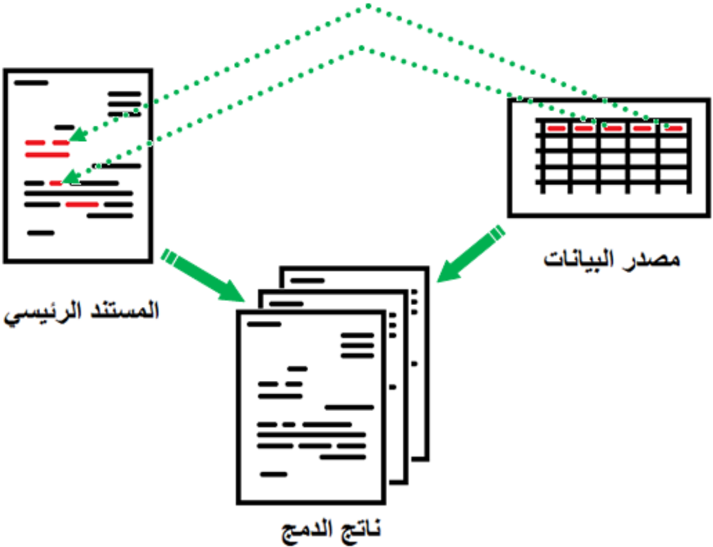

المستوى: السنة الأولى ثانوي (1AS)
المدة الزمنية: ساعتان (أسبوع واحد: ساعة نظرية + ساعة تطبيقية)
البرنامج المرجعي: Microsoft Word وExcel في Microsoft 365 / Office 2021
في نهاية هذه الوحدة، يكون المتعلم قادرًا على أن:
| الحصة | المرحلة | السؤال المركزي | ناتج التعلّم القابل للملاحظة |
|---|---|---|---|
| الأولى (نظرية) | الانطلاق (10 د) | كيف نكتب 30 دعوة دون أن نكتبها 30 مرة؟ | يقترح فكرة «رسالة واحدة + قائمة أسماء». |
| الأولى (نظرية) | بناء التعلمات (50 د) | ما مكوّنات الدمج؟ وكيف نربطها؟ | يُنجز دمجًا موجّهًا مع الأستاذ على 3 أسطر. |
| الثانية (تطبيقية) | النشاط التطبيقي (45 د) | كيف نُنتج الدعوات وقائمة المدعوين؟ | 10 دعوات مدمجة + قائمة مدعوين في جدول. |
| الثانية (تطبيقية) | التقويم (15 د) | هل أستطيع تفسير ما أنجزت؟ | يجيب عن التقويم الختامي وبطاقة الخروج. |
ملاحظة للأستاذ والتلميذ: الأقسام المعلَّمة بـ «إثراء» خارج الأهداف الرسمية؛ تُنجز إن بقي وقت أو كعمل منزلي، ولا تدخل في التقويم.
قررت ثانويتك تنظيم حفل تكريم المتفوقين في نهاية الفصل الأول، وكلّفك المدير بكتابة دعوة لأولياء 30 تلميذًا. نص الدعوة واحد، ولا يتغير فيها إلا: اسم التلميذ ولقبه وقسمه.
سؤال للنقاش: ماذا لو اكتشفنا خطأً في تاريخ الحفل بعد كتابة 30 نسخة يدويًا؟ وماذا لو استعملنا الدمج؟
دمج المراسلات (Mail Merge): خاصية في معالج النصوص تجمع بين مستند نموذجي فيه نص ثابت، وقائمة بيانات فيها معلومات متغيرة، لإنتاج مستندات شخصية لكل سطر من القائمة.

| المكوّن | ماذا يحتوي؟ | مثال من وضعية الانطلاق |
|---|---|---|
| المستند الرئيسي (Main Document) | النص الثابت المشترك بين كل النسخ، مع أماكن للمعلومات المتغيرة | نص الدعوة: التاريخ، المكان، التوقيع… |
| مصدر البيانات (Data Source) | جدول: كل عمود حقل، وكل سطر سجل (شخص واحد) | جدول التلاميذ في Excel |
| حقول الدمج (Merge Fields) | روابط تُوضع في المستند الرئيسي وتشير إلى أعمدة مصدر البيانات | «الاسم»، «اللقب»، «القسم» |
الناتج: مستند ثالث (أو طباعة أو رسائل بريد) يحتوي نسخة لكل سجل.
اللقب.في وحدة القوالب أنجزت استمارة معلومات: نص ثابت وفراغات تُملأ. المستند الرئيسي هو الفكرة نفسها، لكن الفراغات لا يملؤها شخص بيده بل يملؤها Word من مصدر البيانات. لذلك يمكن أن تفتح استمارة أو قالبًا حفظته سابقًا وتستعمله مستندًا رئيسيًا.
نختارها من: مراسلات (Mailings) › بدء دمج المراسلات (Start Mail Merge)
| النوع | الاستعمال | الناتج |
|---|---|---|
| رسائل (Letters) | دعوات، شهادات، استدعاءات | صفحة لكل سجل |
| رسائل البريد الإلكتروني (E-mail Messages) | إرسال رسالة شخصية لكل مستلم | بريد لكل سجل |
| مغلفات (Envelopes) | كتابة العنوان على الظروف | ظرف لكل سجل |
| تسميات (Labels) | ملصقات الطاولات، ملصقات الكراريس | عدة ملصقات في الصفحة |
| دليل (Directory) | قوائم: قائمة المدعوين، قائمة القسم | كل السجلات متتالية في مستند واحد |
نحدد الحقول قبل أي خطوة، لأن تغييرها لاحقًا يُفسد الربط:
| اسم الحقل | محتواه | مثال |
|---|---|---|
اللقب | لقب التلميذ | بن علي |
الاسم | اسم التلميذ | ياسين |
الجنس | ذكر أو أنثى (بهذه الكتابة بالضبط) | ذكر |
القسم | القسم | 1ع ت 1 |
الولاية | ولاية الإقامة | البليدة |
قواعد مصدر بيانات سليم:
_ عند الحاجة: تاريخ_الميلاد).| اللقب | الاسم | الجنس | القسم | الولاية |
|---|---|---|---|---|
| بن علي | ياسين | ذكر | 1ع ت 1 | الجزائر |
| حمادي | سارة | أنثى | 1ع ت 1 | البليدة |
| بوزيد | أمين | ذكر | 1آ 1 | تيبازة |
| قاسمي | مريم | أنثى | 1ع ت 2 | الجزائر |
| زروقي | إسحاق | ذكر | 1ع ت 2 | بومرداس |
| مسعودي | لينة | أنثى | 1آ 1 | البليدة |
| عيساوي | رياض | ذكر | 1ع ت 1 | تيبازة |
| خليفي | آية | أنثى | 1ع ت 2 | الجزائر |
| بلقاسم | نور الدين | ذكر | 1آ 1 | المدية |
| شريف | هبة | أنثى | 1ع ت 1 | بومرداس |
A1 إلى E1، ثم السجلات العشرة من السطر 2 إلى السطر 11.مدعوون_الحفل.xlsx في مجلدك، ثم أغلق Excel (الملف المفتوح قد يرفض Word الاتصال به).لماذا Excel؟ لأن الإدارات تحتفظ أصلًا بقوائم التلاميذ في جداول Excel، فنستعملها مباشرة دون إعادة كتابة، ويسهل تعديلها وفرزها.
.mdb) في مجلد مصادر البيانات الخاصة بي (My Data Sources). احفظها باسم واضح.افتح مستندًا جديدًا في Word واكتب النص التالي، تاركًا الأماكن بين المعقوفتين [ ] فارغة:
ثانوية الأمير عبد القادر
إلى وليّ أمر: [الاسم] [اللقب] — القسم: [القسم]
تحية طيبة وبعد،
يسرّ مدير الثانوية دعوتكم لحضور حفل تكريم المتفوقين للفصل الأول، يوم الخميس 17 ديسمبر 2026 على الساعة 10:00 صباحًا بقاعة المحاضرات، تشجيعًا لمجهودات [الاسم] ونتائجه المتميزة.
حضوركم يسعدنا. — المدير
احفظه باسم دعوة_رئيسية.docx.
مدعوون_الحفل.xlsx ثم فتح (Open).Sheet1$ وتأكد من تفعيل خيار «الصف الأول من البيانات يحتوي على رؤوس أعمدة» (First row of data contains column headers)، ثم موافق (OK).ظاهريًا لا يتغير شيء، لكن الأزرار الرمادية في تبويب مراسلات أصبحت مفعّلة: هذا دليل على نجاح الربط.
الاسم.اللقب.القسم والاسم الثاني في آخر الفقرة.ملاحظات مهمة:
من مراسلات (Mailings) › إنهاء ودمج (Finish & Merge) نختار واحدًا من ثلاثة:
| الخيار | ماذا يحدث؟ | متى نستعمله؟ |
|---|---|---|
| تحرير مستندات فردية (Edit Individual Documents) | ينشئ مستندًا جديدًا يضم كل الدعوات | للمراجعة والحفظ قبل الطباعة (الأنسب في المخبر) |
| طباعة مستندات (Print Documents) | يرسل الدعوات مباشرة إلى الطابعة | عند التأكد التام من النتيجة |
| إرسال رسائل بريد إلكتروني (Send Email Messages) | يرسل كل دعوة إلى بريد صاحبها | يتطلب عمود بريد إلكتروني وبرنامج Outlook مضبوطًا |
خطوات تحرير مستندات فردية:
Letters1) فيه 10 دعوات، كل دعوة في صفحة. بين الدعوات وضع Word فاصل مقطع (الصفحة التالية) وهو ما درسته في وحدة المقاطع.دعوات_مدمجة.docx.انتبه: المستند الرئيسي يبقى مرتبطًا بملف Excel. لو عدّلت ملف Excel (أضفت تلميذًا)، يكفي فتح المستند الرئيسي وإعادة إنهاء ودمج؛ لا تعيد كتابة شيء. ولو نقلت ملف Excel إلى مجلد آخر، يسألك Word عن مكانه الجديد.
| ما تلاحظه | السبب المحتمل | الحل |
|---|---|---|
| أزرار تبويب مراسلات رمادية | لم يُربط مصدر البيانات | أعد تحديد المستلمين |
| أول تلميذ مفقود من الدعوات | أسماء الحقول ليست في السطر الأول | صحّح ملف Excel ثم أعد الربط |
| الاسم ملتصق باللقب | نسيت المسافة بين الحقلين | أضف مسافة بين «الاسم» و«اللقب» |
| Word يرفض فتح ملف Excel | الملف مفتوح في Excel | أغلق Excel ثم أعد المحاولة |
في LibreOffice: يمر الدمج في Writer عبر معالج دمج المراسلات (Mail Merge Wizard) من قائمة أدوات (Tools)، ويجب أولًا تسجيل ملف الجدول كمصدر بيانات. المبدأ نفسه: مستند رئيسي + مصدر بيانات + حقول.
القاعدة الذهبية للدليل: كل ما تكتبه في المستند الرئيسي يتكرر مع كل سجل. لذلك نكتب فيه سطرًا واحدًا يمثّل مدعوًا واحدًا، ونضيف العنوان بعد الدمج.
قائمة_رئيسية.docx.مدعوون_الحفل.xlsx.Tab بين الحقول:«اللقب» Tab «الاسم» Tab «القسم» Tab «الولاية» ثم Enter مرة واحدة.
النتيجة: مستند جديد فيه 10 أسطر، سطر لكل مدعو.
اللقب Tab الاسم Tab القسم Tab الولاية.قائمة_المدعوين.docx.خطأ شائع: إذا كتبت عنوان القائمة في المستند الرئيسي للدليل، ستجده مكررًا 10 مرات في الناتج!
المشكلة: نريد «ولي التلميذ» للذكور و«ولي التلميذة» للإناث، بدل «ولي أمر».
الفكرة: نجعل Word يختار الكلمة كاملة حسب قيمة الحقل الجنس. (لا نُضيف حرف «ة» وحده، لأن الحرف المنفصل يفقد الاتصال بالكلمة وتنسيقها ويكسر الكتابة العربية.)
الجنسأنثىالتلميذة:التلميذ:بنفس الطريقة: «ونتائجه» / «ونتائجها» بقاعدة ثانية تضع الكلمة كاملة.
إذا ظهرت كلمة «التلميذ» عند تلميذة: تحقق من كتابة «أنثى» في Excel وفي النافذة حرفًا بحرف (همزة، مسافة زائدة…). ولتنسيق نتيجة القاعدة، حدّدها وطبّق الخط المطلوب كأي نص.
الولاية، والمقارنة يساوي (Equal to)، والقيمة البليدة ← تبقى سجلات سارة ولينة فقط.اللقب تصاعديًا، فتخرج قائمة المدعوين مرتبة أبجديًا.الوضعية: كلّفك مدير الثانوية بإعداد دعوات أولياء التلاميذ المتفوقين، وقائمة المدعوين التي سيستعملها المكلّف بالاستقبال يوم الحفل.
العمل: فرديًا (أو ثنائيًا إن قلّت الأجهزة) — المدة: 45 دقيقة — الملفات: في مجلد باسمك.
| المهمة | ما يجب إنجازه | مؤشر النجاح |
|---|---|---|
| 1 | إنشاء مدعوون_الحفل.xlsx بالحقول الخمسة والسجلات العشرة (الفقرة 3-ب) | رؤوس الأعمدة في السطر 1، و10 سجلات دون أسطر فارغة |
| 2 | كتابة نص الدعوة وحفظه دعوة_رئيسية.docx | النص الثابت كامل وصحيح الإملاء |
| 3 | ربط الدعوة بالمصدر وإدراج الحقول الأربعة | الحقول تظهر رمادية مع تمييز حقول الدمج |
| 4 | معاينة 3 سجلات على الأقل | المسافات سليمة، «نور الدين» يظهر كاملًا |
| 5 | الدمج إلى مستند جديد وحفظه دعوات_مدمجة.docx | 10 صفحات، صفحة لكل تلميذ |
| 6 | دمج «دليل» وتحويله إلى جدول قائمة_المدعوين.docx | عنوان واحد + جدول من 4 أعمدة و11 سطرًا (رأس + 10) |
| 7 (إثراء) | قاعدة «التلميذ/التلميذة» + فرز القائمة حسب اللقب | 5 دعوات بـ «التلميذة» و5 بـ «التلميذ»؛ القائمة تبدأ بـ «بلقاسم» |
تسليم: الملفات الأربعة (أو الخمسة) في مجلدك، مع الإجابة شفويًا: «ماذا أفعل لو أُضيف تلميذ جديد إلى القائمة؟».
| المصطلح | العربية | الشرح المختصر |
|---|---|---|
| Mail Merge | دمج المراسلات | إنتاج مستندات شخصية من مستند نموذجي وقائمة بيانات |
| Main Document | المستند الرئيسي | المستند الذي يحمل النص الثابت وحقول الدمج |
| Data Source | مصدر البيانات | الجدول الذي يحمل المعلومات المتغيرة (Excel، قائمة Word…) |
| Merge Field | حقل الدمج | رابط في المستند الرئيسي يُستبدل بقيمة من مصدر البيانات |
| Field | حقل | عمود في قاعدة البيانات له اسم |
| Record | سجل | سطر يخص شخصًا أو عنصرًا واحدًا |
| Recipients | المستلمون | الأشخاص الذين تُنتج لهم المستندات |
| Preview Results | معاينة النتائج | عرض الحقول ببيانات سجل حقيقي قبل الدمج |
| Finish & Merge | إنهاء ودمج | تنفيذ الدمج نحو مستند جديد أو طابعة أو بريد |
| Directory | دليل | نوع دمج يضع كل السجلات متتالية في مستند واحد (قائمة) |
| Labels | تسميات | ملصقات متعددة في الصفحة الواحدة |
| Envelopes | مغلفات | طباعة العنوان على الظروف البريدية |
| Filter / Sort | تصفية / فرز | اختيار السجلات حسب شرط / ترتيبها |